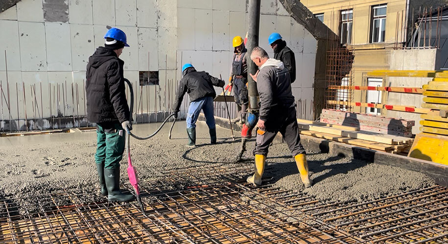
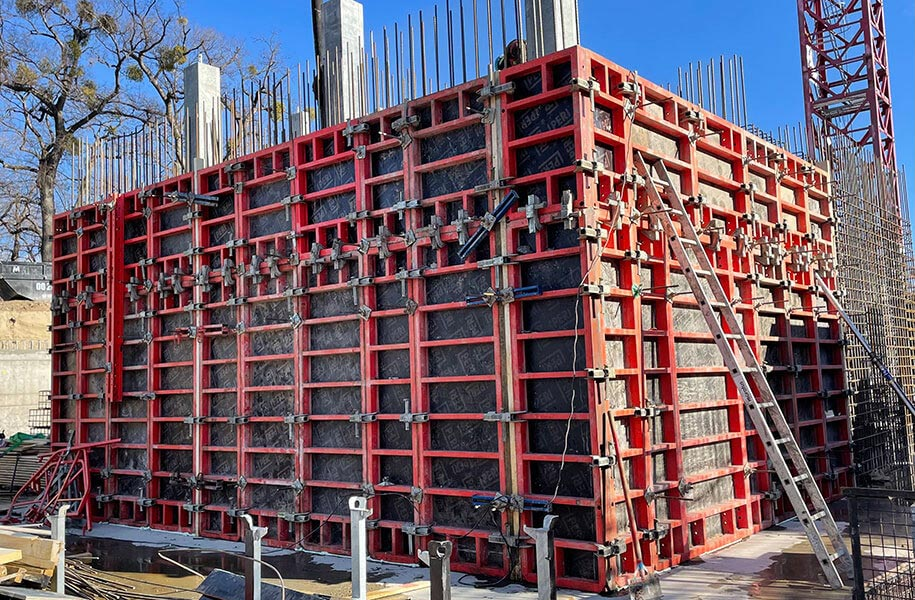
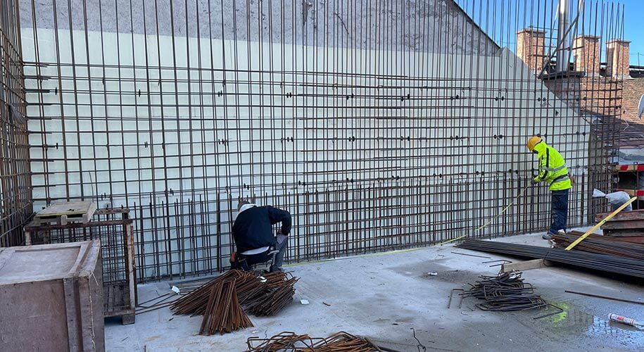

„A minőségi betonozás nem szerencse, hanem szaktudás, pontos technológia és megfelelő alapanyagok kérdése.”
Vállaljuk családi házak, társasházak, ipari ingatlanok és udvarok teljes körű betonozási munkáit. Garanciával, modern gépparkkal és évtizedes szakmai tapasztalattal állunk rendelkezésére.

A betonozás nem egyszerű feladat. Gondos előkészületet igényel, megfelelő anyag kiválasztást és nagy odafigyelés szükséges, illetve az utólagos kezelésről sem szabad megfeledkezni.

A képlékeny állagú beton csak és kizárólag akkor fog az általunk elvárt szögben megszáradni, ha odafigyelünk az első lépésre: a zsaluzásra.

A jelenleg alkalmazott technológia alapján egy teljes szerkezet monolit vasbeton elemekből épülhet fel, amely betonacél szálakból összeszerelt vasalásból, illetve mixerbetonból áll.